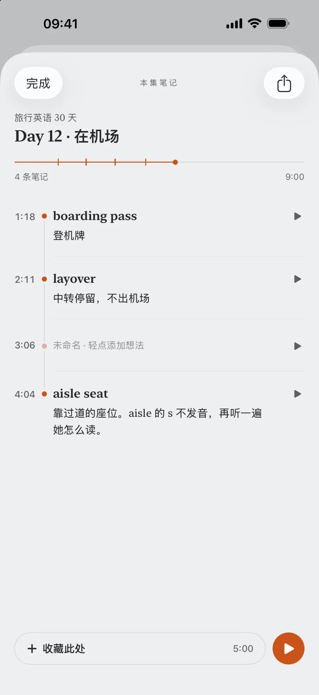
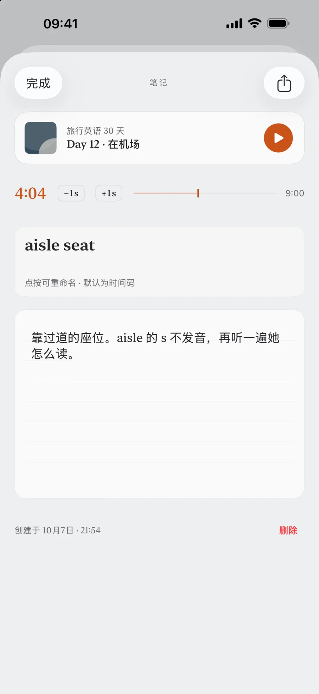
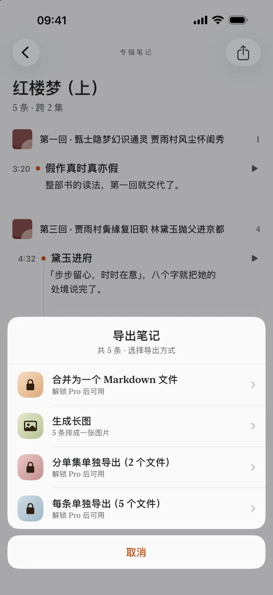

耳记 EarMemo › 边听边记时间戳笔记
在听到的那一秒把笔记钉住，再把它们导成 Markdown
耳记让你不中断播放就写下一条笔记，笔记会带上你当时所在的确切秒数。之后点一下那个标记，音频就跳回那一刻。一次买断耳记 Pro 后，笔记可导出为普通 Markdown 文件——单条、按集、或整张专辑合并——手动放进 Obsidian 或任何笔记软件；文件里的时间码是纯文本，不能点回音频。免费版标记不限，其中 5 条可写文字。不上传、不转写。
它解决的是哪个麻烦
一本九小时的书，在 3:12:40 处有一句话戳中了你。半年后你记得那个意思，却想不起是哪本书。通常的办法是先按个书签，然后开始翻找：找文件、来回拖进度、找到那句话、手打到别处。把笔记钉在时间戳上，等于把这一串动作压缩成一个动作——而且是在那句话还在耳边的时候完成的。
如果你真正的问题不是「怎么记笔记」，而是「听完就忘」，先看有声书听完就忘怎么记住那一页。这一页讲的是工具那一半。
在耳记里怎么用
- 听着的时候按一下标记。标记记下确切的播放位置。标记数量不限，免费版也一样。
- 当场写，或者以后再写。笔记自动保存。可以先按标记，等手边有键盘了再补文字。
- 点标记跳回去。播放从那一秒继续，引用之前可以再听一遍。
- 导出成 Markdown（Pro）。单条笔记、某一集的全部笔记、或整张专辑合并成一个文件。就是普通
.md，没有私有格式。


跟那些 AI 播客笔记 App 有什么不同
Snipd 提供播客转写、AI 摘要和 Obsidian 同步，适合想自动获得播客文字的人。两者都能用耳机打点：按下之后，Snipd 把它变成转写和 AI 摘要，耳记留下那一秒，等你写自己的话。耳记在本地文件上工作，不把收听数据发往服务端。
| 你想要的如果是…… | 那就用 | 代价是 |
|---|---|---|
| 自己的话，钉在自己听到的那一秒，作用于自己的文件 | 耳记 | 得你自己写。不会替你转写。 |
| 什么都不出设备，不要账号 | 耳记 | 自己的设备之间也没有云同步。 |
| 一次买断而不是订阅 | 耳记 | 没有任何服务端功能，因为根本没有服务端。 |
| 播客自动转写和 AI 摘要 | Snipd | 耳记不会转写或总结音频。 |
| 在 App 里订阅播客 RSS | 播客客户端 | 耳记没有内容目录，它播你已经下载好的文件。 |
| 笔记原生长在 Obsidian 里 | PodNotes 或 Audio Notes 插件 | 你的工作面在 Obsidian，而不是手机播放器。 |
怎么把这些笔记弄进 Obsidian？
以文件的形式，三步。目前没有 Obsidian 实时同步或直接集成，导出需手动操作：耳记给你几个写好时间戳的 .md 文件，你像处理任何别的文件一样把它们放进 vault。
- 从耳记导出（Pro）。打开一张专辑的笔记（或「我的笔记」），点「导出」→ Markdown。可以选一条笔记一个文件、一个单集一个文件、或每张专辑合并成一个文件。iOS 分享面板弹出，附带这些
.md文件。 - 存进 vault 所在的文件夹。选「存储到“文件”」，找到 vault：走 iCloud 同步的在
iCloud 云盘 › Obsidian › 你的 vault，本地 vault 在我的 iPhone › Obsidian › 你的 vault。建一个音频笔记/子文件夹把它们放一起。隔空投送到 Mac 再拖进 vault 也是一样的。 - 打开 Obsidian。下次启动它就会看到新文件。每一集的
##标题会出现在大纲里，时间码显示为行内代码；标签、双链、front matter 你自己加——它就是纯文本，没有什么拦着你。

导出的 Markdown 长什么样？
一张专辑合并导出的样子。每条笔记是一个带时间码的 ### 标题，所以不管你之后怎么重排文字，出处的位置都还在：
# 统计学导论 · 秋季讲座
3 条笔记 · 导出于 2026年9月17日 21:40
## 第 07 讲 —— 置信区间
### `0:41:12` — 为什么 95% 不是「均值有 95% 的概率在这里面」
区间是随机的，参数不是。做作业前回来重听：他紧接着就讲了抛硬币的版本。
### `1:03:55`
例题从这里开始。样本量 40，标准误写在黑板上。
### `1:19:30` — 宽度和 n 的关系
宽度减半要付出四倍样本。他说这是整节课唯一要记住的一句。
带章节的有声书，每章的名字在它那几条笔记上方出现一次，时间码从本章开头算；旁边再写一个全书时间，给不读章节的播放器用（最后一条是只打了点、还没写字的标记）：
# 鲁迅 · 呐喊
4 条笔记 · 导出于 2026年10月15日 21:40
## 呐喊
**狂人日记**
### `20:10` · 全书 34:10 — 从来如此，便对么？
整篇最清醒的一句，偏偏出自「疯子」之口。
**孔乙己**
### `8:25` · 全书 50:25
「多乎哉？不多也。」——笑完才觉得难受。
**故乡**
### `12:40` · 全书 2:31:40 — 「老爷！……」
这一声把两个人隔开了。回头重听这一段。
### `27:50` · 全书 2:46:50
文件里的时间码是一个引用，不是链接：Obsidian 够不到你手机上的音频。想再听一遍那句话，回耳记点那个标记——文件告诉你在哪，App 把你带过去。正因为是普通 Markdown，它在 Bear、Logseq、Notion 或纯文本编辑器里一样能用。
免费版包含哪些
标记对所有人都不限量。免费版可以在其中 5 条上写文字；一次买断的耳记 Pro 去掉这个限制，并开启 Markdown 导出。撞到限制时，你已经写下的内容不会被删掉，也不会被藏起来。
什么情况下不该选耳记
- 你想要转写稿。耳记不转写。没有语音转文字，本地的也没有。
- 你想让 AI 帮你总结这一集。完全没有 AI 功能，这是有意的。
- 你想让笔记自动同步进 Obsidian。导出是手动的一步，产出的是文件；耳记不提供云同步。
- 你是在播客 App 里订阅 RSS 收听的。耳记播的是已下载的文件，它不是播客客户端，没有订阅源。
常见问题
iPhone 上能边听边记带时间戳的笔记吗？
能。耳记可以在不中断播放的情况下在当前位置按下一个标记，当场写或者之后补写。点一下标记，音频就跳回那一秒。
MP3 和 M4B 文件都能记时间戳笔记吗？
都能。耳记能播的文件都能记——mp3、m4a、m4b、aac、flac、wav，以及 mp4、mov、m4v 的音轨。笔记钉的是那个文件的播放位置，跟格式无关。唯一记不了的是带 DRM 的文件（Audible、Apple Books），因为它们根本导不进来。
能从笔记跳回音频吗？
能。每条笔记都带着写下它时的那一秒。点一下标记——在专辑的笔记列表里，或在跨所有专辑的「我的笔记」里——播放就从那个位置继续，不用离开笔记。如果音频文件后来被你删了，笔记还在，只是跳过去没有地方可去。
能把音频笔记导进 Obsidian 吗？
能，Pro 可手动导出普通 Markdown 文件——单条、一集或整张专辑合并。用 iOS 分享面板存进 Obsidian vault 所在文件夹即可。目前没有实时同步或直接集成。
在 Obsidian 里点时间码能跳回音频吗？
不能。导出文件里的时间码是纯文本，比如 `1:03:55`，Obsidian 够不到你手机上的音频。跳回去这件事发生在耳记里：点一下标记，播放就从那一秒继续。文件给你的是出处，App 给你的是播放。
耳记会转写音频吗？
不会。没有转写，也没有 AI。笔记是你自己写的，App 做的事是把它钉在确切的秒数上，并且能原样导成 Markdown 拿出来。
删掉音频文件之后，笔记还在吗？
还在。笔记和书签跟音频分开存储，为了腾空间清理文件不会连笔记一起带走。
讲座录音和语音备忘录也能这样记吗？
能。只要能导入——讲座 mp3、mp4 录像的音轨、访谈、语音备忘录——记时间戳笔记的方式完全一样。
记笔记是免费的吗？
标记在免费版不限量，其中 5 条可以写文字。一次买断的耳记 Pro 去掉写字限制，并开启 Markdown 导出。